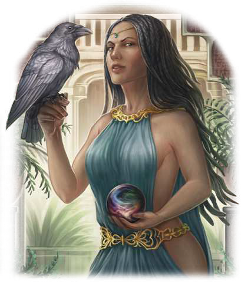

"Du kommst, mich um Rat zu fragen? Dann bist du entweder verrückt, unglaublich tapfer oder der Meinung, dass du etwas besitzt, das mich interessieren könnte. Kaiser, Königinnen und Erzmagier haben um meine Hilfe ersucht. Und ich will einmal ganz offen sein: Eure Probleme fangen an, mich außerordentlich zu langweilen."
Der Klang ihres namens lässt Kinderaugen strahlen, Herrscher erzittern und so manchen Erzmagier vor Neid erblassen. Wohl keine Magiekundige der letzten vier Jahrhunderte ist derart von Legenden umrankt wie die alterslose Zauberin. Sie ging am Hofe Kaiser Hals ein und aus, war für den Fall des Hofmagiers Galotta verantwortlich, der später zum Heptarchen wurde, und hat sich selbst von der Rückkehr des Dämonenmeisters Borbarad nur wenig beeindrucken lassen. Niemand weiß, welche Pläne Nahema insgeheim verfolgt, die unzählige verschiedene Identitäten und Rückzugsorte unterhält. Es wird gemutmaßt, dass sie sich inzwischen lediglich aus schierer Langeweile immer wieder in die Geschicke der Mächtigen einmischt. Einig sind sich die zahllosen Geschichten aber darin, dass die beeindruckend schöne Frau aus den Tulamidenlanden stammt und als Verhüllte Meisterin eine der mächtigsten Zauberkundigen Aventuriens ist. Viele Jungmagier träumen davon, einmal eine ihrer Formeln zu studieren oder sogar von ihr unterrichtet zu werden.
Volkes Stimme
- "Sie hat sich Borbarad entgegengestellt, wer kann das neben den Sieben Gezeichneten schon von sich behaupten?
Sie ist ein Vorbild für uns Magier, wenn ich auch nur einen Bruchteil ihres Wissens hätte, dann..."
- "Nahema interessiert nur Nahema. Diese unsterbliche Hexenmeisterin gehört auf den Scheiterhaufen!"